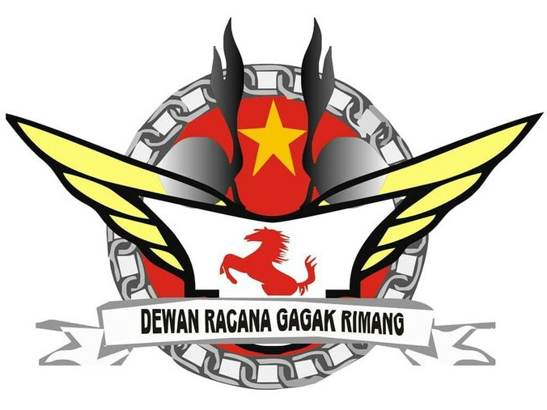

|  | ||||||||||||||||||||||||||||||||
| Pramuka adalah singkatan dari Praja Muda Karana dan merupakan organisasi atau gerakan kepanduan. Pramuka adalah sebuah organisasi yang merupakan wadah proses pendidikan kepramukaan yang dilaksanakan di Indonesia. Dalam dunia internasional, Pramuka disebut dengan istilah "Kepanduan" (Boy Scout). |
UNIT KEGIATAN MAHASISWA (UKM) PRAMUKA
RACANA GAGAKRIMANG UNIVERSITAS BOYOLALI (UBY)
GUGUS DEPAN: 04.133-04.134 |
|||||||||||||||||||||||||||||||
| HALAMAN UTAMA
| PROFIL UKM
| PENDAFTARAN |
|
||||||||||||||||||||||||||||||||
|
||||||||||||||||||||||||||||||||
|
UJIAN AKHIR SEMESTER (UAS) PERIODE GANJIL TAHUN AKADEMIK 2020-2021 FAKULTAS ILMU KOMPUTER UNIVERSITAS BOYOLALI
|
Program Studi: Teknik Informatika Mata Kuliah: Rancang Bangun WEB Nama: Andhi Prasetyo NIM : C20010004 |
AUDACES FORTUNA IUVAT. Nasib baik menolong mereka yang berani. (Pepatah Romawi Kuno) |
||||||||||||||||||||||||||||||